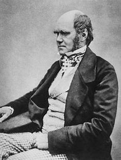

Charles Darwin and Christian Thought
C. David Grant, Ph.D.
Emeritus Professor of Religion
Texas Christian University
d.grant@tcu.edu
Website: drcdgfw.github.io/darwin
Session 1: Christianity and the Rise of Science
Session 2: Early 19th-Century Evolutionary Thought
Session 3: Charles Darwin's Thought
Session 4: Christian Reactions to Darwin